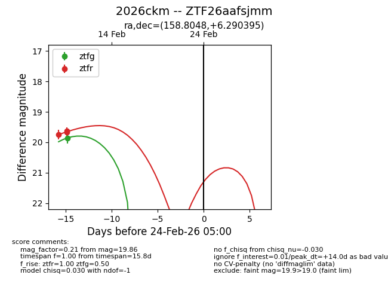
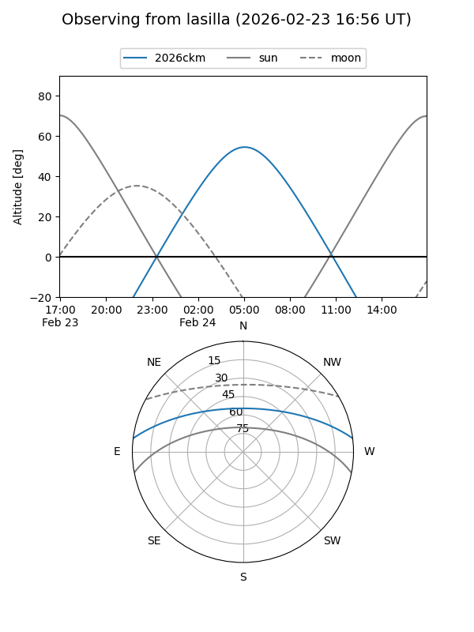
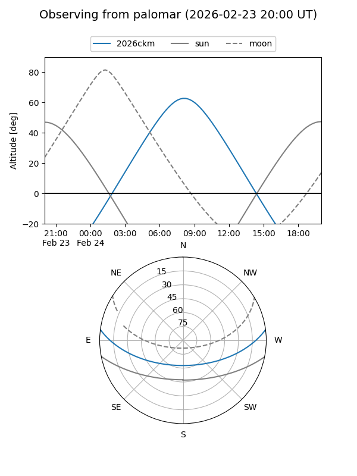

2026ckm
Target 2026ckm at 2026-02-24 09:08
Aliases and brokers:
FINK: link
Lasair: link
ALeRCE: link
TNS: link
YSE: link
alt names
ZTF26aafsjmm (ztf,fink_ztf)
2026ckm (tns,yse)
Coordinates:
equatorial (ra, dec) = 158.8048,+6.29040
equatorial (HMS+DMS) = 10:35:13.15,+06:17:25.42
galactic (l, b) = (239.4714,+51.52503)
Flags:
Photometry:
last ztfg=19.86, ztfr=19.63
1 ztfg, 3 ztfr detections
Lightcurve

Visibility


Additional plots